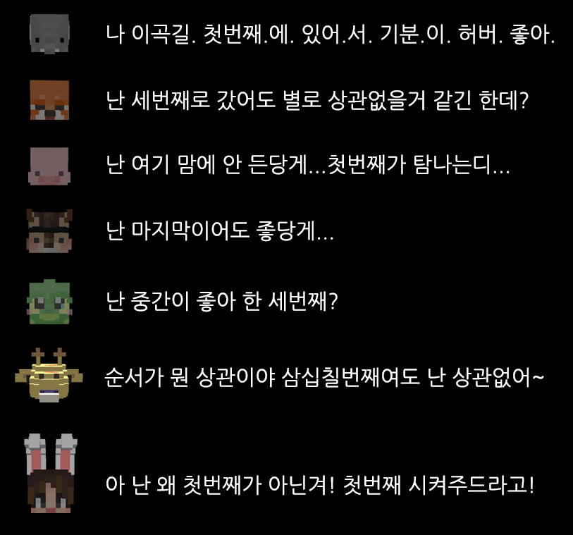

jappap.github.io/답
힌트: 8
첫번째가 좋은 elephant: e
세번째도 상관없는 fox: x
첫번째가 탐나는 pig: p
마지막이어도 좋은 squirrel: l
중간인 세번째가 좋은 flog: o
3, 7이어도 상관없는 giraffe: r, e
첫번째 시켜줘! rabbit: r
다 이어보면 답은 explorer어야
jappap.github.io/explorer
ppapcon.github.io/explorer-master